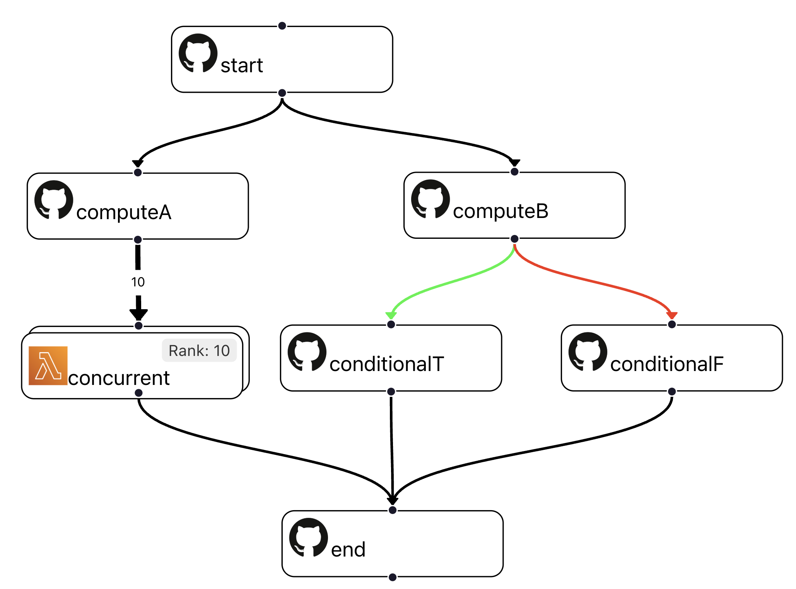
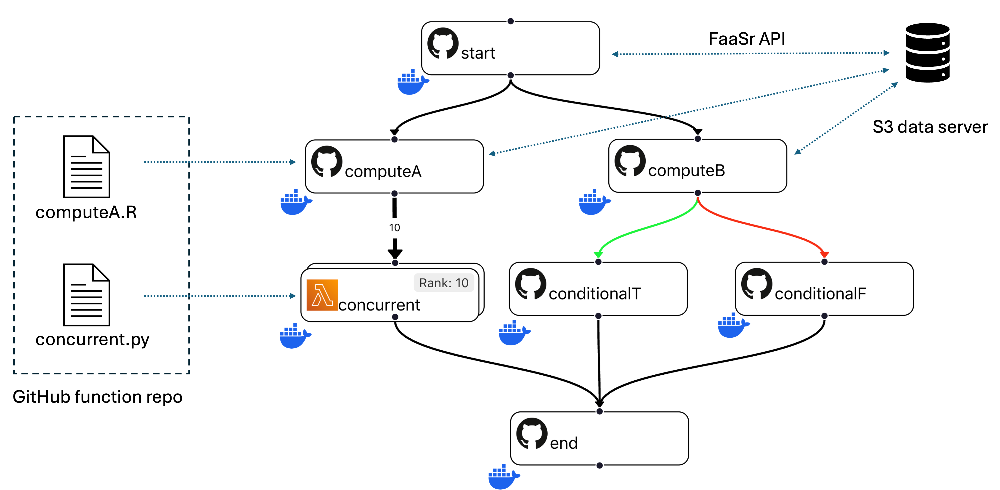
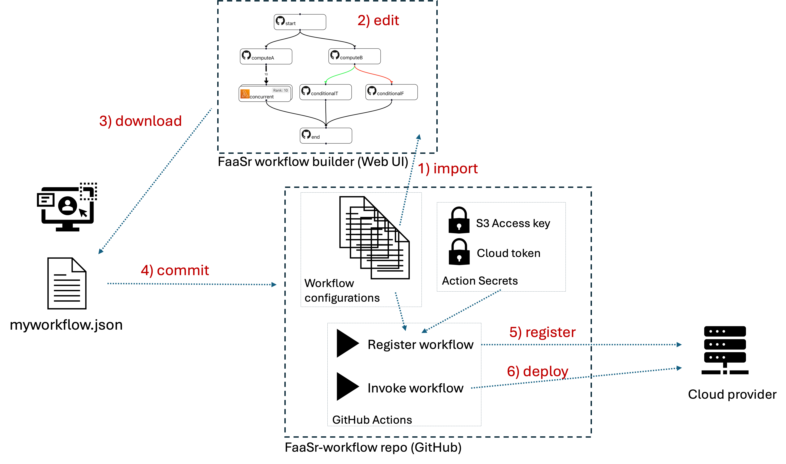

FaaSr workflow model
The FaaSr model for programming, configuring, and deploying workflows is as follows:
- FaaSr Workflow DAG: describes the order in which your functions execute. Valid workflows must be Directed Acyclic Graphs (DAG) (i.e. no loops) with a single invocation entry, and are described as a JSON file
- Action: each node in the DAG is an Action that represents the execution of a user function in a container deployed at runtime in a serverless cloud provider (e.g. a GitHub Action, or AWS Lambda)
- Function: once deployed, each Action executes a user-defined Function in the contaier. A Function is written in a high level language and published as a .R or .py file in a GitHub Function repo. A Function takes input arguments and returns either true (successful excecution) or false (unsuccessful execution)
- Input/output: a serverless Action is stateless: the local memory and storage in a container is discarded when the Action completes. Therefore, all data that must persist across invocations must be stored as files in one or more S3 cloud data store servers. FaaSr provides an Application Programming Interface (API) to store/retrieve files to/from S3 for this.
Workflow DAG example
To illustrate how a FaaSr workflow DAG works, consider the example below:

- This DAG has seven Actions, where the invocation entry is a node named start
- Action start has two successor actions: computeA and computeB; this means that when start finishes executing, both computeA and computeB are invoked, concurrently
- Action computeA invokes ten instances of action concurrent; each of these actions is provided with a unique Rank (in this example, a number from 1 to 10)
- Action computeB invokes either conditionalT or conditionalF, depending on whether computeB returns True or False, respectively
- Finally, action end only executes after all its predecessors in the DAG finish their execution - i.e. after all 10 instances of concurrent and either conditionalT or conditionalF finish
- In this DAG, the concurrent actions execute as AWS Lambdas, while all other actions execute as GitHub Actions
Actions, functions, and input/output files
The example workflow DAG above names which actions should execute, and in which order. Each action is essentially a container (e.g. a Docker instance) that is deployed on a serverless cloud provider - which means these actions are invoked, execute for some time, then are terminated. Let's dive deeper now into: how to define which Function each action executes? How to save and retrieve inputs and outputs?

- Action computeA runs a function written in R, while concurrent runs a function written in Python. These stored in (one or more) GitHub function repo(s) and are fetched automatically by the action when it is invoked
- Actions can read input files and write output files to (one or more) S3 data store(s). the FaaSr API provides functions in R and Python to put files to/get files from data server(s). The FaaSr API simplifies the programming of functions to use data from S3, without exposing you (the programmer or user) to details on how to access S3
- In general, the bulk of the data in a workflow consists of files; function arguments are used for configuration (e.g. of parameters, file and folder names)
- The typical file access pattern is as follows: 1) an action starts; 2) the action gets input file(s), copying them from persistent S3 storage into its local temporary storage; 3) the action produces output file(s) in its local non-persistent storage; 4) the action puts its output file(s) to persistent S3 storage; and 5) the action ends
Creating, editing, registering and invoking workflows
We've seen what the workflow DAG represents (actions and their orders) and we also have seen that workflow DAGs themselves are stored in files in the JSON format. Putting it all together, we need ways to: 1) create and edit workflow JSON files using the FaaSr workflow builder Web graphical user interface; 2) store these workflow JSON configuration files in a FaaSr-workflow repository on GitHub; and 3) register and invoke these workflows in your cloud provider(s) of choice. Consider the example below that illustrates how this process typically works:

- The user first needs to fork the FaaSr-workflow repo from the FaaSr organization. This will be your main environment for managing all your workflows (you can also have multiple workflow repos, though typically a single repo will suffice)
- Let's assume the user already has one or more workflows in this repo (e.g. the tutorial workflow). Then the user can use the FaaSr workflow builder to 1) import the workflow JSON file from their FaaSr-workflow repo; 2) edit with the Web UI; 3) download the JSON file to their computer; 4) commit the JSON file to their workflow repo; 5) register the workflow with their cloud provider(s); and 6) invoke the workflow so it executes in the cloud
- Once a workflow is registered, it can be invoked multiple times, either as manual, user-initiated one-shot invocations, or as an automatic, unattended periodic timer invocation
- The registration and invocation of workflows are themselves implemented as GitHub Actions inherited from the forked FaaSr-workflow repo
- The FaaSr-workflow repo also stores Secrets which are the credentials needed to access your cloud provider(s) of choice
Container images and package dependences
- FaaSr provides a set of base images for containers with runtime environments for both Python and R, and deployable on the supported cloud providers. These images are typically sufficient for most use cases.
- If a function needs additional packages (e.g. from CRAN, PyPI), those can be declared in the workflow JSON configuration and fetched automatically.
- If a function needs a custom container image, the user can create their own custom container image(s), copy them to the appropriate container registry (e.g. DockerHub, GHCR, ECR), and also declare them in the workflow JSON configuration